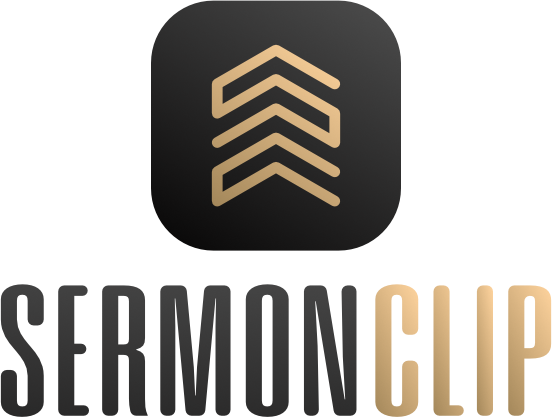

Select the sermon
Start with the full Sunday service recording and use the waveform to set the beginning and end of the sermon.

For full Sunday service recordings
SermonClip lets you choose the sermon boundaries, add opening and closing bumpers, prepare subtitles, and export the resulting video and audio files.
SermonClip 1.1.0 · macOS Tahoe 26+ · Apple Silicon
What SermonClip does
Start with the full Sunday service recording and use the waveform to set the beginning and end of the sermon.
Import an SRT or generate subtitles, review them over the video, and adjust their timing when needed.
Export MP4, MP3, and SRT files, or upload the finished MP4 and subtitle track to a connected YouTube channel.
Project settings
SermonClip stores your bumper library, description presets, thumbnails, and YouTube preferences locally so they are available the next time you open the app.
Read the YouTube setup guideLatest release
Apple Silicon macOS application. Requires a user-provided Google OAuth configuration for YouTube features.